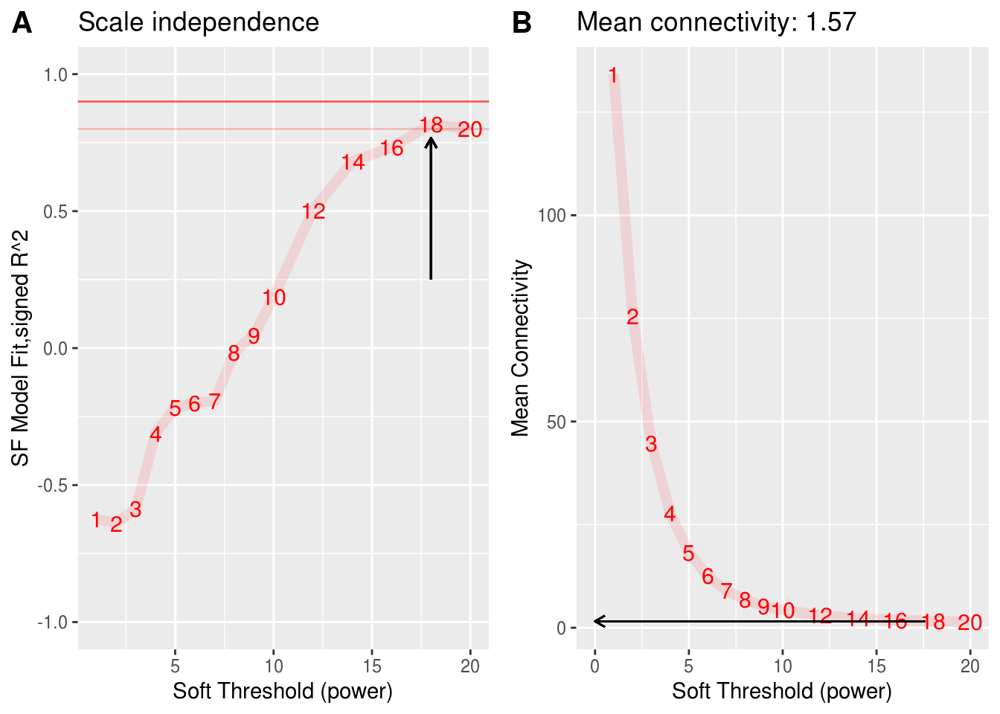
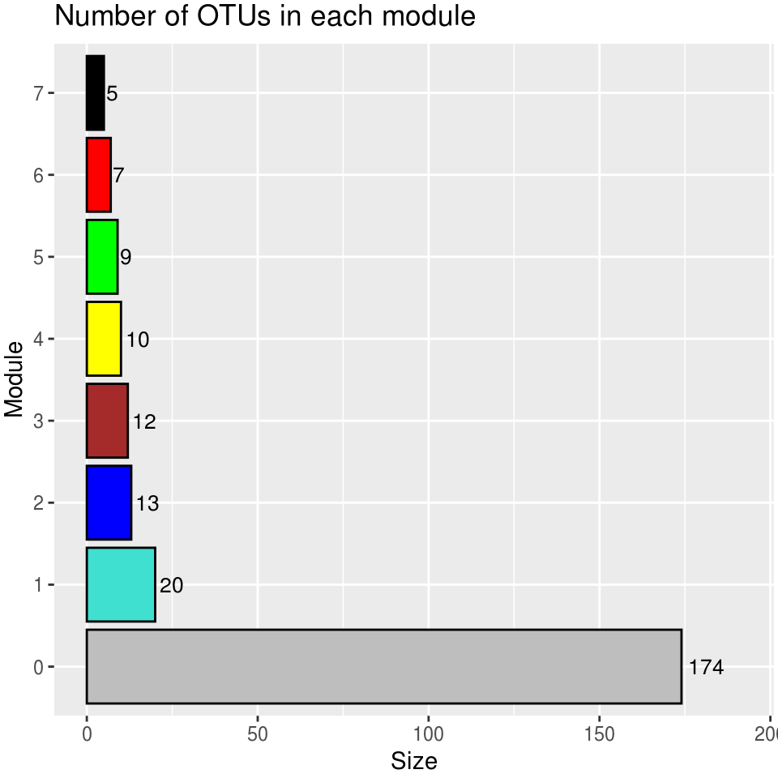
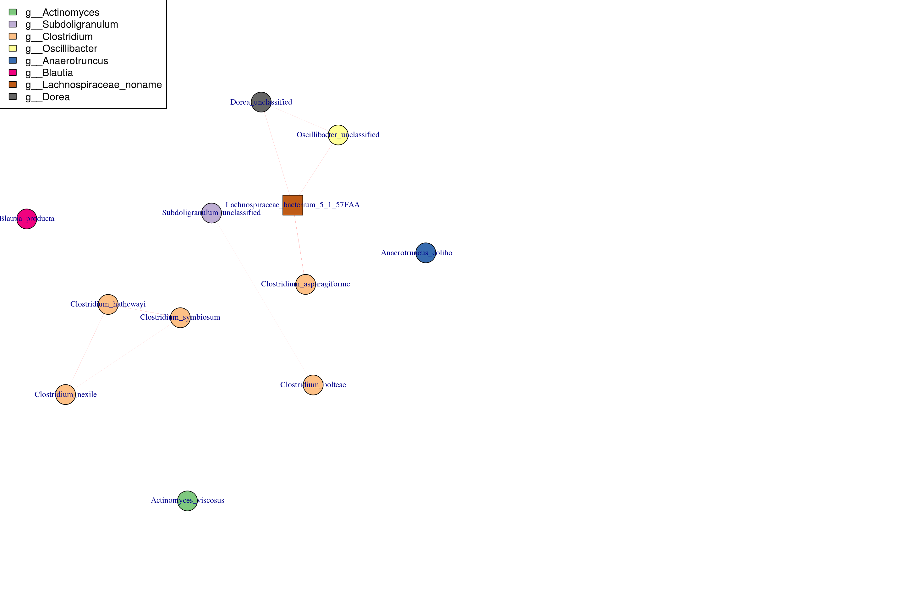
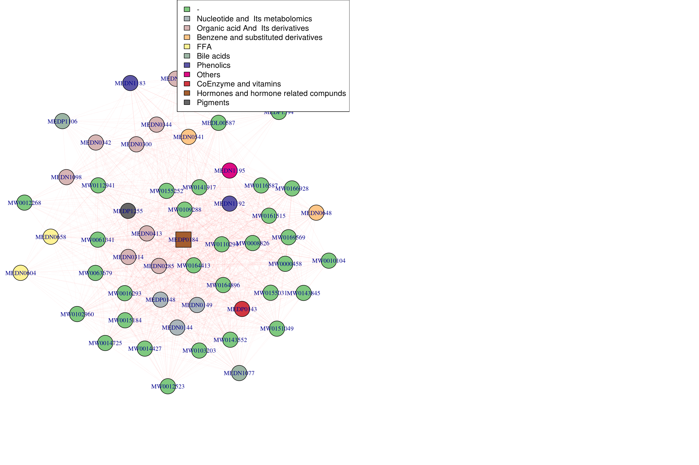

Chapter 2 WGCNA
For any questions about this chapter, please contact zhuzhengnong (zhuzhengnong@xbiome.com)
2.1 Introduction
In this book, we will introduce an method of multi-omics association analysis, entitled WGCNA. We will introduce usage and principle of WGCNA. Moreover, we will utilize GVHD data to illustate pipelines of WGCNA.
Correlation networks are increasingly being used in bioinformatics applications. For example, weighted gene co-expression network analysis is a systems biology method for describing the correlation patterns among genes across microarray samples. Weighted correlation network analysis (WGCNA) can be used for finding clusters (modules) of highly correlated genes, for summarizing such clusters using the module eigengene or an intramodular hub gene, for relating modules to one another and to external sample traits (using eigengene network methodology), and for calculating module membership measures. Correlation networks facilitate network based gene screening methods that can be used to identify candidate biomarkers or therapeutic targets. These methods have been successfully applied in various biological contexts, e.g. cancer, mouse genetics, yeast genetics, and analysis of brain imaging data. While parts of the correlation network methodology have been described in separate publications, there is a need to provide a user-friendly, comprehensive, and consistent software implementation and an accompanying tutorial.
The WGCNA R software package is a comprehensive collection of R functions for performing various aspects of weighted correlation network analysis. The package includes functions for network construction, module detection, gene selection, calculations of topological properties, data simulation, visualization, and interfacing with external software. Along with the R package we also present R software tutorials. While the methods development was motivated by gene expression data, the underlying data mining approach can be applied to a variety of different settings. More details can be found on WGCNA website
WGCNA workflow
2.1.1 Introduction to the 7 Steps in WGCNA
Please read the follwing introduction to the steps of WGCNA. If you know WGCNA very well, please jump to Environment Setup
2.1.1.1 Step one: The Definition of a Gene Co-expression Similarity
第一步首先确定需要构建网络模块使用那种 correlation 方法去计算节点之间的相关性，常见的方法为 Pearson correlation \(s_{ij} = |cor(i,j)|\)，那么 similarity matrix \(S = [s_{ij}]\)。当然，我们可以根据不同的数据使用不同的correlation算法。WGCNA默认的correlation算法为bicor
2.1.1.2 Step two: The Definition of a Family of Adjacency Functions
第二步是确定邻接矩阵。将similarity matrix 转化为 adjacency matrix，需要一个阈值。确定这个阈值有两种方法，hard threshold 和 soft threshold。
hard threshold 通常使用signum函数作为连接函数来实现：
\[ a_{ij} = signum(s_{ij}, \tau) \equiv \begin{cases} 1 \quad if s_{ij} \geq \tau \\ 0 \quad if s_{ij} \le \tau \end{cases} \]
Hard threshoding using the signum function leads to intuitive network concepts, but it may lead to a loss of information: if \(\tau\) has been set to 0.8, there will be no connection between two nodes if their similarity equals 0.79.
To avoid the disadvantage of hard thresholding, we propose two types of ‘soft’ adjacency functions: the sigmoid function
\[ a_{ij} = sigmoid(s_{ij}, \alpha, \tau_{0}) \equiv \frac{1}{1+e^{-\alpha(s_{ij}-\tau_{0})}} \] the power adjacency function
\[ a_{ij} = power(s_{ij}, \beta) \equiv |s_{ij}|^\beta \]
根据不同adjacency function构建的不同adjacency matrix
a图为使用sigmoid function的adjacency matrix，b图为使用power function的adjacency matrix。从图中我们可以看出power function的adjacency matrix能够保留大部分强相关连的关系，弱关联的关系则会被消除，能够减少节点之间的连接噪音。在我们的WGCNA流程中我们默认选择的是power function方法去构建adjacency。
2.1.1.3 Step three: Determining the Parameters of the Adjacency Function
第三步是确定adjacency function的参数，对我们的流程来说，就是确定 \(\beta\) 参数。为了确定参数，WGCNA提出了无标度拓扑网络（The Scale-free Topology）的概念。无标度网络在pathways, metabolic等生物数据上已经得到了验证，因此我们也假设基因的表达，微生物的生长关系也是符合无标度拓扑网络的概念。因此，当选择的参数需要满足无标度拓扑网络的构建。
什么是无标度网络？

scale-free topology
无标度网络的形象描述就是，有一个hub node，大部分的节点与其相连接，而这些节点本身连接较少。
怎么判断合适的 \(\beta\)?
Earlier, we have described that he linear regression model fitting index \(R^2\) can be used to quantify how well a network satisfies a scale-free topology. There is a natural trade-off between maximizing scale-free topology model fit(\(R^2\)) and maintaining a high mean number of connections: parameter values that lead to an \(R^2\) value close to 1 may lead to networks with very few connections.

select beta
如上图所示，当\(\beta\)为6时，\(R^2\)接近与1，但是任然保留较高的connections
2.1.1.4 Step four: Defining a Measure of Node Dissimilarity
第四步确定节点之间的不相似性距离。通过构建node之间的dissimilarity，然后用cluster方法可以将node（gene or others）划分到不同的module，同时也可以观察一个module中的node的连接紧密程度。
The topology overlap matrix (TOM) \(\Omega = [w_{ij}]\)
\[ w_{ij} = \frac{l_{ij} + a_{ij}}{min\{k_{i}, k_{j}\} + 1 - a_{ij}} \] \(l_{ij} = \sum_{u}a_{iu}a_{uj}\), 表示i和j共享连接的u之间的关系乘的和
\(k_{i} = \sum_{j=1}^na_{ij}\),表示i的所有连接和
dissimilarity measure is defined by \(d_{ij}^w = 1 - w_{ij}\)
2.1.1.5 Step five: Identifying Gene Modules
第5步划分module。根据\(d_{ij}^w\), 用cluster方法划分module
split modules
a height cutoff value is chosen in the dendrogram such that some of the resulting branches correspond to dark squares(modules) along the diagonal of the TOM plot.
2.1.1.6 Step six: Relating Network Concepts to Each Other
第六步定义模块中的属性。
- 比如hub node。Each module can be represented by a centroid, e.g., an intramodular hub gene. Singular value decomposition
\[ X^{(q)} = [x_{ij}^{(q)}] = (x_{1}^{(q)} \quad x_{2}^{(q)} \quad x_{3}^{(q)} \dots x_{n}^{(q)})^T \\ X^{(q)} = U^{(q)}D^{(q)}(V^{(q)})^T \\ V^{(q)} = (v_{1}^{(q)} \quad v_{2}^{(q)} \quad v_{3}^{(q)} \dots v_{m}^{(q)}) \] Module Eigengene: \[ E^{(q)} = v_{1}^{(q)} \] 2. module之间的correlation，如果两个module的correlation很高，可以合并两个module为一个。
2.1.1.7 Step seven: Relating Network Concepts to External Gene or Sample Information
第七步，将module与外部数据相关联，找到感兴趣的module。
A main purpose of many network analysis is to relate a connectivity measure to external gene information. For example, In our cancer microarray application, we show that for brown module genes intramodular connectivity is highly correlated with prognostic significance for cancer surival.
relating to external information
如上图所示，临床数据（weight）与brown module最相关，表示这个module中的gene or node对weight有显著性的影响。
Users can choose different chapters to read according to their own data type: 16S, MGS and metabolic data. You can also [integrate the modules from different data type into a network.
2.2 Environment Setup
Seek help from Zhuzhengnong(zhuzhengnong@xbiome.com) on any issues about the installation of R packages/dependencies in this tutorial.
2.3 WGCNA for 16S data
Data used in this sub-chapter belongs to SLE project, including 45 samples with 1364 ASVs.
2.3.1 Data loading (WGCNA 16S)
2.3.1.1 Read counts table from rds
seq_tab <- readRDS("/share/projects/Analytics/analytics/MultiOmics/tools/WGCNA/test/SLE/data/dada2_res.rds")$seq_tab
# 将ASV替换为ASV1，ASV2，...
ASV_index <- data.frame(ASV=colnames(seq_tab))
ASV_index$index <- paste0("ASV",c(1:dim(ASV_index)[1]))
colnames(seq_tab) <- ASV_index$index
datatable(seq_tab[1:10, 1:10])2.3.1.2 Read taxa table from rds
taxa_tb <- readRDS("/share/projects/Analytics/analytics/MultiOmics/tools/WGCNA/test/SLE/data/dada2_res.rds")$tax_tab
taxa_tb <- merge(ASV_index, taxa_tb, by.x = "ASV", by.y = 0)
taxa_tb <- taxa_tb[,-c(1)] # remove ASV column
taxa_tb <- taxa_tb %>% column_to_rownames("index")
datatable(taxa_tb[1:5, ])2.3.2 Build WGCNA network (WGCNA 16S)
2.3.2.1 Set parameters (WGCNA 16S)
# Set seed as a precaution for reproducibility as some methods are non-deterministic.
set.seed(13118)
Run_analysis <- TRUE # if FALSE it tries to load data instead of running
save_plots <- TRUE
plot_labeling_size = 15
prefix <- "m"
save_TOM <- TRUE
pam_stage <- FALSE # Partitioning around medoids, tries to put more OTUs into modules where it is not directly clear from the dendrogram cutting.
set_verbose = 1 # How much detail from the WGCNA functions? Higher means more detail.
parameter_sets <- list(set_1 = list(applied_norm = "TSS", applied_transf = "CLR", assoc_measure = "bicor"),
set_2 = list(applied_norm = "CSS", applied_transf = "log2", assoc_measure = "bicor"))
chosen_parameter_set <- parameter_sets$set_2
pcCorrection <- F
if(pcCorrection){
estimate_n.pc = F
if(!estimate_n.pc){
number_of_pcs_to_remove = 0 # Does not matter when pcCorrection is FALSE
}
}
save_name <- "16S_network_module"2.3.2.2 Data normalization (WGCNA 16S)
if(chosen_parameter_set$applied_norm == "TSS"){
# Normalize
seq_tab_filter <- apply(seq_tab_filter, MARGIN = 2, function(x){x/sum(x) * 100})
seq_tab_filter <- propr:::proprCLR(t(seq_tab_filter) + 1) # t(), samples as rows, variables as columns
seq_tab_filter <- t(seq_tab_filter)
}
if(chosen_parameter_set$applied_norm == "CSS"){
# Normalization and transformation in one
data.metagenomeSeq <- metagenomeSeq::newMRexperiment(seq_tab_filter) # Variables as rows, samples as columns
p <- metagenomeSeq::cumNormStat(data.metagenomeSeq)
data.cumnorm <- metagenomeSeq::cumNorm(data.metagenomeSeq, p=p)
seq_tab_filter <- metagenomeSeq::MRcounts(data.cumnorm, norm=TRUE, log=TRUE) # log here is a +1 shifted log2
}## Default value being used.## [1] "45 Samples" "231 OTUs"2.3.2.3 Select the best power parameter for Soft threshold
Before running this chunk and the the chunks onwards, please make sure that your data has been filterd and normalized. Also make sure that samples are on row and features are on column in your input profile table
powers <- c(1:10, seq(12,20,2))
suppressWarnings(sft <- pickSoftThreshold(seq_tab_filter,
powerVector = powers,
verbose = set_verbose,
networkType = "signed",
corFn= chosen_parameter_set$assoc_measure))## pickSoftThreshold: will use block size 231.
## pickSoftThreshold: calculating connectivity for given powers... ..0% ..100%
## Power SFT.R.sq slope truncated.R.sq mean.k. median.k. max.k.
## 1 1 0.6140 11.20 0.9500 118.000 119.0000 129.00
## 2 2 0.0977 1.59 0.8770 63.000 62.8000 76.10
## 3 3 0.1530 -1.20 0.7990 34.800 34.2000 46.90
## 4 4 0.2970 -1.44 0.8540 19.900 19.2000 30.00
## 5 5 0.2820 -1.17 0.8240 11.900 11.3000 19.70
## 6 6 0.3040 -1.02 0.9330 7.370 7.0000 13.70
## 7 7 0.3360 -1.00 0.9280 4.760 4.4200 9.77
## 8 8 0.4560 -1.09 0.8500 3.210 2.8400 7.18
## 9 9 0.5630 -1.07 0.7710 2.250 1.9100 5.49
## 10 10 0.7380 -1.33 0.8710 1.640 1.3400 4.85
## 11 12 0.1900 -3.14 -0.0251 0.977 0.6970 4.12
## 12 14 0.1970 -2.85 -0.0237 0.663 0.3710 3.73
## 13 16 0.2850 -4.10 0.1900 0.499 0.2150 3.50
## 14 18 0.2450 -4.12 0.0383 0.407 0.1220 3.36
## 15 20 0.2480 -3.81 0.0410 0.351 0.0795 3.26# Find the soft thresholding power beta to which co-expression similarity is raised to calculate adjacency.
# based on the criterion of approximate scale-free topology.
idx <- min(which((-sign(sft$fitIndices[,3])*sft$fitIndices[,2]) > 0.90))
if(is.infinite(idx)){
idx <- min(which((-sign(sft$fitIndices[,3])*sft$fitIndices[,2]) > 0.80))
if(!is.infinite(idx)){
st <- sft$fitIndices[idx,1]
} else{
idx <- which.max(-sign(sft$fitIndices[,3])*sft$fitIndices[,2])
st <- sft$fitIndices[idx,1]
}
} else{
st <- sft$fitIndices[idx,1]
}
# Plot Scale independence measure and Mean connectivity measure
# Scale-free topology fit index as a function of the soft-thresholding power
data.frame(Indices = sft$fitIndices[,1],
sfApprox = -sign(sft$fitIndices[,3])*sft$fitIndices[,2]) %>%
ggplot() +
geom_hline(yintercept = 0.9, color = "red", alpha = 0.6) + # corresponds to R^2 cut-off of 0.9
geom_hline(yintercept = 0.8, color = "red", alpha = 0.2) + # corresponds to R^2 cut-off of 0.8
geom_line(aes(x = Indices, y = sfApprox), color = "red", alpha = 0.1, size = 2.5) +
geom_text(mapping = aes(x = Indices, y = sfApprox, label = Indices), color = "red", size = 4) +
ggtitle("Scale independence") +
xlab("Soft Threshold (power)") +
ylab("SF Model Fit,signed R^2") +
xlim(1,20) +
ylim(-1,1) +
geom_segment(aes(x = st, y = 0.25, xend = st, yend = sfApprox[idx]-0.05),
arrow = arrow(length = unit(0.2,"cm")),
size = 0.5)-> scale_independence_plot
# Mean connectivity as a function of the soft-thresholding power
data.frame(Indices = sft$fitIndices[,1],
meanApprox = sft$fitIndices[,5]) %>%
ggplot() +
geom_line(aes(x = Indices, y = meanApprox), color = "red", alpha = 0.1, size = 2.5) +
geom_text(mapping = aes(x = Indices, y = meanApprox, label = Indices), color = "red", size = 4) +
xlab("Soft Threshold (power)") +
ylab("Mean Connectivity") +
geom_segment(aes(x = st-0.4,
y = sft$fitIndices$mean.k.[idx],
xend = 0,
yend = sft$fitIndices$mean.k.[idx]),
arrow = arrow(length = unit(0.2,"cm")),
size = 0.4) +
ggtitle(paste0("Mean connectivity: ",
round(sft$fitIndices$mean.k.[idx],2))) -> mean_connectivity_plot
cowplot::plot_grid(scale_independence_plot, mean_connectivity_plot, ncol = 2, align = "h", labels = c("A", "B"), label_size = plot_labeling_size) -> si_mc_plot
si_mc_plot2.3.3 Block-wise network construction and module detection
The function blockwiseModules will first pre cluster with fast crude clustering method to cluster OTUs into blocks not exceeding the maximum, blocks may therefore not be fully optimal in the end.
Adjust the parameters to fit your own data.
Run_analysis <- TRUE
if(Run_analysis){
modules.otu <- blockwiseModules(seq_tab_filter,
power = st,
networkType = "signed",
TOMType = "signed",
corType = chosen_parameter_set$assoc_measure,
maxPOutliers = 0.05,
deepSplit = 2,
pamStage = pam_stage,
pamRespectsDendro = TRUE,
mergeCutHeight = 0.25,
replaceMissingAdjacencies = TRUE,
minModuleSize = 5, # There are fewer otus than genes, and that many might not be connected
numericLabels = TRUE,
saveTOMs = save_TOM,
saveTOMFileBase = paste0("/share/projects/Analytics/analytics/MultiOmics/tools/Bookdown/result/", save_name),
verbose = set_verbose)
rownames(modules.otu$MEs) <- rownames(seq_tab_filter)
names(modules.otu$colors) <- colnames(seq_tab_filter)
names(modules.otu$unmergedColors) <- colnames(seq_tab_filter)
hubs <- chooseTopHubInEachModule(seq_tab_filter, modules.otu$colors)
}## Calculating module eigengenes block-wise from all genes2.3.3.1 Visualizing module characteristics
# Convert labels to colors for plotting
merged_colors <- labels2colors(modules.otu$colors)
n_modules <- unique(merged_colors) %>% length()
samples_good <- sum(modules.otu$goodSamples) == length(modules.otu$goodSamples)
OTUs_good <- sum(modules.otu$goodGenes) == length(modules.otu$goodGenes)
ME_good <- sum(modules.otu$MEsOK) == length(modules.otu$MEsOK)2.3.3.2 Display OTUs in each module
table(modules.otu$colors) %>%
as.data.frame() %>%
dplyr::rename(Module = Var1, Size = Freq) %>%
dplyr::mutate(Module_color = labels2colors(as.numeric(as.character(Module)))) -> module_size
module_size %>%
ggplot(aes(x = Module, y = Size, fill = Module)) +
geom_col(color = "#000000") +
ggtitle("Number of OTUs in each module") +
theme(legend.position = "none") +
scale_fill_manual(values = setNames(module_size$Module_color,module_size$Module)) +
geom_text(aes(label = Size),vjust = 0.5, hjust = -0.18, size = 3.5) +
ylim(0, max(module_size$Size)*1.1) +
theme(plot.margin = margin(2, 2, 2, 2, "pt")) +
coord_flip()-> module_size_barplot
module_size_barplot
2.3.3.3 Extract modules in the network
plotEigengeneNetworks(modules.otu$MEs, "Eigengene adjacency heatmap",
marDendro = c(3,3,2,4),
marHeatmap = c(3,4,2,2), plotDendrograms = T,
xLabelsAngle = 90)
## Show module info
table(modules.otu$colors) %>% as.data.frame() -> res
res$`Module color` <- WGCNA::labels2colors(as.numeric(as.character(res$Var1)))
res <- res[, c(1,3,2)]
colnames(res) <- c("Module", "Module color", "Number of OTUs")
print(res)## Module Module color Number of OTUs
## 1 0 grey 141
## 2 1 turquoise 58
## 3 2 blue 10
## 4 3 brown 8
## 5 4 yellow 8
## 6 5 green 62.3.3.4 Dendrogram of modules
# Plot the dendrogram and the module colors underneath for each block
for(i in seq_along(modules.otu$dendrograms)){
plotDendroAndColors(modules.otu$dendrograms[[i]], merged_colors[modules.otu$blockGenes[[i]]],
"Module colors",
dendroLabels = FALSE, hang = 0.03,
addGuide = TRUE, guideHang = 0.05,
main = paste0("Cluster Dendrogram\n",
"for block ",
i,": ",
length(modules.otu$blockGenes[[i]]),
" OTUs"))
}
2.3.4 Module (Eigengene) correlation
MEs <- modules.otu$MEs
# Module correlation to other modules
MEs_R <- bicor(MEs, MEs, maxPOutliers = 0.05)## Warning in bicor(MEs, MEs, maxPOutliers = 0.05): bicor: zero MAD in variable 'x'. Pearson correlation was used for individual columns with zero (or missing) MAD.## Warning in bicor(MEs, MEs, maxPOutliers = 0.05): bicor: zero MAD in variable 'y'. Pearson correlation was used for individual columns with zero (or missing) MAD.idx.r <- which(rownames(MEs_R) == "ME0")
idx.c <- which(colnames(MEs_R) == "ME0")
MEs_R_noME0 <- MEs_R[-idx.r, -idx.c]
MEs_R[upper.tri(MEs_R_noME0)] %>%
as.data.frame() %>%
dplyr::rename("correlation" = ".") %>%
ggplot(aes(x=correlation)) +
geom_density() +
ggtitle(paste0(prefix,"ME correlation density\n without ",prefix ,"ME0")) -> MEs_R_density
pheatmap::pheatmap(MEs_R, color = colorRampPalette(c("Blue", "White", "Red"))(100),
silent = T,
breaks = seq(-1,1,length.out = 101),
treeheight_row = 5,
treeheight_col = 5,
main = paste0(prefix,"ME correlation heatmap"),
labels_row = paste0(prefix, rownames(MEs_R)),
labels_col = paste0(prefix, colnames(MEs_R))) -> MEs_R_Corr
cowplot::plot_grid(MEs_R_density, MEs_R_Corr$gtable, labels = c("D", "E"), label_size = plot_labeling_size, rel_widths = c(0.6, 1)) -> density_eigen
density_eigen%20correlation-1.png)
## [1] TRUE## [1] "45 samples" "231 OTUs"## Warning in bicor(seq_tab_filter, MEs, maxPOutliers = 0.05): bicor: zero MAD in variable 'x'. Pearson correlation was used for individual columns with zero (or missing)
## MAD.## Warning in bicor(seq_tab_filter, MEs, maxPOutliers = 0.05): bicor: zero MAD in variable 'y'. Pearson correlation was used for individual columns with zero (or missing)
## MAD.## [1] "231 OTUs" "6 modules"2.3.4.1 Plot intramodular correlation
How the OTUs within a module correlates to the module eigengene.
intra_cor <- c()
for (i in 1:ncol(seq_tab_filter)) {
m <- modules.otu$colors[i]
intra_cor[i] <- kME[i, paste0("ME", m)]
if(m != 0){
intra_cor[i] <- kME[i, paste0("ME", m)]
} else{
intra_cor[i] <- NA
}
}
idx <- which(is.na(intra_cor))
intra_cor <- intra_cor[-idx]
plot(density(intra_cor), main = "Correlations with module-eigenOTU (within module correlation)\nNo ME0", xlim = c(-1,1))
2.3.4.2 Plot intramodular correlation for each module
Plot intramodular correlation for each module individually, and color by module color.
# Corr within modules
corr_within_module <- function(seq_tab_filter, modules, module_x = 1){
idx.omics_data <- which(modules$colors == module_x)
idx.me <- which(colnames(modules$MEs) == paste0("ME",module_x))
kME_x <- bicor(seq_tab_filter[,idx.omics_data], modules$MEs[,idx.me], maxPOutliers = 0.05)
kME_x
}
ggplot.list <- list()
for(m in colnames(modules.otu$MEs)){
h <- as.numeric(sub("ME","", m))
data.frame(x = suppressWarnings(corr_within_module(seq_tab_filter = seq_tab_filter, modules = modules.otu, module_x = h))) %>%
ggplot() +
geom_density(aes(x = x), fill = labels2colors(h), color = "black", alpha = 0.5) +
xlim(-1, 1) +
xlab("OTU correlation")+
ggtitle(paste0(prefix,m)) -> da_plot
ggplot.list[[m]] <- da_plot
}
ggplot.list <- ggplot.list[ggplot.list %>% names() %>% sub("ME", "", .) %>% as.numeric() %>% order()]
cowplot::plot_grid(plotlist = ggplot.list, ncol = 2) -> density_all_plot
density_all_plot
## Combine to one plot
cowplot::plot_grid(si_mc_plot , density_eigen, ncol = 1, rel_heights = c(0.8,1)) -> part_1
cowplot::plot_grid(part_1, module_size_barplot, labels = c("", "C"), label_size = plot_labeling_size, rel_widths = c(1,0.5)) -> part_2
cowplot::plot_grid(part_2, density_all_plot, ncol = 1, rel_heights = c(0.8,1), labels = c("", "F"), label_size = plot_labeling_size)
2.3.5 Find Hub ASV
For each module it is possible to pick a hub ASV with the function chooseTopHubInEachModule.
hubs %>%
as.data.frame() %>%
dplyr::rename("OTU_name" = ".") %>%
tibble::rownames_to_column(var = "Module") -> hubOTUs
dplyr::left_join(hubOTUs,
(taxa_tb %>%
tibble::rownames_to_column(var = "OTU_name")),
by = "OTU_name") -> hubOTUs
hubOTUs## Module OTU_name Kingdom Phylum Class Order Family Genus Species
## 1 0 ASV75 Bacteria Bacteroidetes Bacteroidia Bacteroidales Bacteroidaceae Bacteroides <NA>
## 2 1 ASV20 Bacteria Firmicutes Clostridia Clostridiales Lachnospiraceae Dorea longicatena
## 3 2 ASV248 Bacteria Firmicutes Clostridia Clostridiales Lachnospiraceae Blautia <NA>
## 4 3 ASV222 Bacteria Firmicutes Clostridia Clostridiales Peptostreptococcaceae <NA> <NA>
## 5 4 ASV237 Bacteria Bacteroidetes Bacteroidia Bacteroidales Bacteroidaceae Bacteroides <NA>
## 6 5 ASV214 Bacteria Firmicutes Erysipelotrichia Erysipelotrichales Erysipelotrichaceae Holdemanella <NA>## Module OTU Phylum Genus
## 1 0 ASV75 Bacteroidetes Bacteroidaceae
## 2 1 ASV20 Firmicutes Lachnospiraceae
## 3 2 ASV248 Firmicutes Lachnospiraceae
## 4 3 ASV222 Firmicutes Peptostreptococcaceae
## 5 4 ASV237 Bacteroidetes Bacteroidaceae
## 6 5 ASV214 Firmicutes Erysipelotrichaceae2.3.6 Visualize Network
2.3.6.1 Construct network with igragh
load(file = "/share/projects/Analytics/analytics/MultiOmics/tools/Bookdown/result/16S_network_module-block.1.RData")
# The TOM is saved as a dist object and needs to be converted to a matrix
TOM <- as.matrix(TOM)
# Add OTU names to the TOM matrix. It is symmetrical so rownames = colnames
rownames(TOM) <- colnames(TOM) <- names(modules.otu$colors)
## Choose taxonomic level should the graph be colored with in addition to modules?
selected_taxa <- "Phylum"
## Convert module labels and taxonomy to hex colors
taxonomy_info <-
taxa_tb %>%
rownames_to_column(var = "OTU_name") %>%
dplyr::select("OTU_name", selected_taxa) %>%
mutate_all(.funs = list(as.character)) ## Note: Using an external vector in selections is ambiguous.
## ℹ Use `all_of(selected_taxa)` instead of `selected_taxa` to silence this message.
## ℹ See <https://tidyselect.r-lib.org/reference/faq-external-vector.html>.
## This message is displayed once per session.module_info <-
modules.otu$colors %>%
as.data.frame() %>%
rownames_to_column(var = "OTU_name") %>%
dplyr::rename(Module = ".")
## 选择指定模块
TOM <- TOM[module_info$OTU_name, module_info$OTU_name]
graph_info <- left_join(module_info, taxonomy_info, by = "OTU_name")
## Converts R-colors to hex colors
color2hex <- function(x){
x <- col2rgb(x)
rgb(x[1,], x[2,], x[3,], maxColorValue = 255)
}
## Add specific colors to the taxa
taxa_colors <-
graph_info %>%
dplyr::select(selected_taxa) %>%
unique() %>%
mutate(tax_color = colorRampPalette(RColorBrewer::brewer.pal(8, "Accent"))(nrow(.)))
graph_info_colors <-
left_join(graph_info, taxa_colors) %>%
mutate(module_color = WGCNA::labels2colors(Module)) %>%
mutate(module_color = color2hex(module_color)) %>%
mutate(module_color = paste0(module_color,70))## Joining, by = "Phylum"## If all lines are too thick, reduce the strength (between 0 and 1).
## The lower the number the weaker the lines.
strength_adjust = 1
g <- graph.adjacency(TOM, mode="undirected", weighted= TRUE)
#~https://stackoverflow.com/questions/28366329/how-to-scale-edge-colors-igraph
igraph::delete.edges(g, which(E(g)$weight <1))## IGRAPH d753a0d UNW- 231 0 --
## + attr: name (v/c), weight (e/n)
## + edges from d753a0d (vertex names):E(g)$width <- E(g)$weight*strength_adjust + min(E(g)$weight)
set.seed(231) # Ensures the same layout given the same data.
l <- layout_with_fr(g, weights = E(g)$weight)
# Order graph_info_colors by the graph
graph_info_colors <- graph_info_colors[which(graph_info_colors$OTU_name %in% V(g)$name),]
# Ensure that the names are in the same order
if(all(V(g)$name == graph_info_colors$OTU_name)){cat("\nOTU names match")}##
## OTU names match# Add square shapes to hub OTUs
V(g)$shape <- ifelse(V(g)$name %in% hubs[-1], "square", "circle") #-1 means dont use module 0
# OTUs in modules have larger nodes
V(g)$size <- ifelse(graph_info_colors$Module != 0, 10, 5)
# And larger text
V(g)$label.cex <- ifelse(graph_info_colors$Module != 0, 0.8, 0.4)
# Remove everything but the number to increase readability
V(g)$name = sub("OTU_", "", graph_info_colors$OTU_name)2.3.6.2 Plot network
## Find distinct entires for the plot legends
module_labels <-
graph_info_colors %>%
dplyr::select(Module, module_color) %>%
distinct() %>%
arrange(Module)
tax_labels <-
graph_info_colors %>%
dplyr::select(selected_taxa, tax_color) %>%
distinct()
## Plot the graphs, leftmost is colored by module, rightmost is colored by taxonomic classification
par(mfrow = c(1,2))
par(mar = c(0,0,0,0))
plot(g, layout = l, vertex.color = graph_info_colors$module_color)
# legend("topleft", legend = paste0("mM", 0:(nrow(module_labels)-1)), fill=module_labels$module_color)
legend("topleft", legend = paste0("mM", 0:(nrow(module_labels)-1)), fill=module_labels$module_color)
plot(g, layout = l, vertex.color = graph_info_colors$tax_color)
legend("topleft", legend = tax_labels %>% .[,1], fill=tax_labels$tax_color)
2.4 WGCNA for MGS data
MGS data from GvHD project (32 samples with 250 species features) was used as demo data in this sub-chapter.
2.4.1 Data loading (WGCNA MGS)
2.4.1.1 Read demo input files (WGCNA MGS)
mgs_profile <- read.table("/share/projects/Analytics/analytics/MultiOmics/tools/HAllA/GvHD/metaphlan2_merged.tsv", header = TRUE, sep = "\t") # read metagenomic hirerachy table，only need ID column
mgs <- read.table("/share/projects/Analytics/analytics/MultiOmics/tools/HAllA/GvHD/metagenomics.txt", header = TRUE, sep = "\t") # read metagenomic species level data
metadata <- read.table("/share/projects/Analytics/analytics/MultiOmics/tools/HAllA/GvHD/metadata.txt", header = TRUE, sep = "\t") # read metadata
dim(mgs_profile)## [1] 1028 69## [1] 250 32## [1] 15 32## [mgs] Feature: 250 Sample: 322.4.1.2 Construct the hierarchy table for taxa data
# taxa hierarchy table
mgs_species <- mgs_profile %>%
.[sapply(str_split(mgs_profile$ID, "\\|"), function(x) length(x) == 7), ]
taxa_table <- str_split_fixed(mgs_species$ID,"\\|", 7) %>% as.data.frame()
colnames(taxa_table) <- c("Kingdom", "Phylum", "Class", "Order", "Family", "Genus", "Species")
rownames(taxa_table) <- str_replace(taxa_table$Species, "s__", "")2.4.2 Data normalization (WGCNA MGS)
data.metagenomeSeq <- metagenomeSeq::newMRexperiment(mgs) # Variables as rows, samples as columns
p <- metagenomeSeq::cumNormStat(data.metagenomeSeq)## Default value being used.data.cumnorm <- metagenomeSeq::cumNorm(data.metagenomeSeq, p=p)
mgs <- metagenomeSeq::MRcounts(data.cumnorm, norm=TRUE, log=TRUE) # log here is a +1 shifted log2
dim(mgs)## [1] 250 322.4.3 Build WGCNA network (WGCNA MGS)
2.4.3.1 select power (WGCNA MGS)
powers <- c(1:10, seq(12,20,2)) # default
suppressWarnings(sft <- pickSoftThreshold(mgs_t,
powerVector = powers,
verbose = 1,
networkType = "signed",
corFn= "bicor"))## pickSoftThreshold: will use block size 250.
## pickSoftThreshold: calculating connectivity for given powers... ..0% ..100%
## Power SFT.R.sq slope truncated.R.sq mean.k. median.k. max.k.
## 1 1 0.6250 10.900 0.768 134.00 135.000 150.00
## 2 2 0.6400 4.310 0.814 75.60 75.700 93.20
## 3 3 0.5870 2.560 0.867 44.70 44.700 60.90
## 4 4 0.3110 1.210 0.715 27.80 27.900 41.70
## 5 5 0.2170 0.761 0.623 18.20 17.900 29.70
## 6 6 0.2000 0.561 0.699 12.50 12.100 21.80
## 7 7 0.1940 0.438 0.730 9.05 8.830 16.40
## 8 8 0.0156 0.114 0.753 6.80 6.510 13.60
## 9 9 0.0476 -0.223 0.620 5.30 4.830 11.80
## 10 10 0.1870 -0.526 0.470 4.26 3.720 10.50
## 11 12 0.5040 -0.857 0.661 2.99 2.310 8.89
## 12 14 0.6820 -0.965 0.666 2.27 1.470 7.93
## 13 16 0.7330 -1.080 0.659 1.84 1.070 7.33
## 14 18 0.8160 -1.020 0.804 1.57 0.777 6.94
## 15 20 0.8010 -0.986 0.808 1.38 0.587 6.67# Find the soft thresholding power beta to which co-expression similarity is raised to calculate adjacency.
# based on the criterion of approximate scale-free topology.
idx <- min(which((-sign(sft$fitIndices[,3])*sft$fitIndices[,2]) > 0.90))
if(is.infinite(idx)){
idx <- min(which((-sign(sft$fitIndices[,3])*sft$fitIndices[,2]) > 0.80))
if(!is.infinite(idx)){
st <- sft$fitIndices[idx,1]
} else{
idx <- which.max(-sign(sft$fitIndices[,3])*sft$fitIndices[,2])
st <- sft$fitIndices[idx,1]
}
} else{
st <- sft$fitIndices[idx,1]
}
# Plot Scale independence measure and Mean connectivity measure
# Scale-free topology fit index as a function of the soft-thresholding power
data.frame(Indices = sft$fitIndices[,1],
sfApprox = -sign(sft$fitIndices[,3])*sft$fitIndices[,2]) %>%
ggplot() +
geom_hline(yintercept = 0.9, color = "red", alpha = 0.6) + # corresponds to R^2 cut-off of 0.9
geom_hline(yintercept = 0.8, color = "red", alpha = 0.2) + # corresponds to R^2 cut-off of 0.8
geom_line(aes(x = Indices, y = sfApprox), color = "red", alpha = 0.1, size = 2.5) +
geom_text(mapping = aes(x = Indices, y = sfApprox, label = Indices), color = "red", size = 4) +
ggtitle("Scale independence") +
xlab("Soft Threshold (power)") +
ylab("SF Model Fit,signed R^2") +
xlim(1,20) +
ylim(-1,1) +
geom_segment(aes(x = st, y = 0.25, xend = st, yend = sfApprox[idx]-0.05),
arrow = arrow(length = unit(0.2,"cm")),
size = 0.5)-> scale_independence_plot
# Mean connectivity as a function of the soft-thresholding power
data.frame(Indices = sft$fitIndices[,1],
meanApprox = sft$fitIndices[,5]) %>%
ggplot() +
geom_line(aes(x = Indices, y = meanApprox), color = "red", alpha = 0.1, size = 2.5) +
geom_text(mapping = aes(x = Indices, y = meanApprox, label = Indices), color = "red", size = 4) +
xlab("Soft Threshold (power)") +
ylab("Mean Connectivity") +
geom_segment(aes(x = st-0.4,
y = sft$fitIndices$mean.k.[idx],
xend = 0,
yend = sft$fitIndices$mean.k.[idx]),
arrow = arrow(length = unit(0.2,"cm")),
size = 0.4) +
ggtitle(paste0("Mean connectivity: ",
round(sft$fitIndices$mean.k.[idx],2))) -> mean_connectivity_plot
cowplot::plot_grid(scale_independence_plot, mean_connectivity_plot, ncol = 2, align = "h", labels = c("A", "B"), label_size = 15) -> si_mc_plot
si_mc_plot
The number closest to the 0.8 line is 18, and the constructed adjacency matrix most closely fits with scale-free topology. Therefore power is 18.
2.4.3.2 Block-wise network construction and module detection (WGCNA MGS)
The function blockwiseModules will first pre cluster with fast crude clustering method to cluster OTUs into blocks not exceeding the maximum, blocks may therefore not be fully optimal in the end.
Change the parameters here to better reflect your own data.
if(!dir.exists("./result/")) {
dir.create("./result/")
}
Run_analysis <- TRUE
if(Run_analysis){
modules.mgs <- blockwiseModules(mgs_t,
power = st,
networkType = "signed",
TOMType = "signed",
corType = 'bicor',
maxPOutliers = 0.05,
deepSplit = 2,
pamStage = FALSE,
pamRespectsDendro = TRUE,
mergeCutHeight = 0.25,
replaceMissingAdjacencies = TRUE,
minModuleSize = 5, # There are fewer otus than genes, and that many might not be connected
numericLabels = TRUE,
saveTOMs = TRUE,
saveTOMFileBase = "./result/modules.mgs", #"/share/projects/Analytics/analytics/MultiOmics/tools/WGCNA/test/GVHD/bookdown_GVHD/result/modules.mgs",
verbose = 1)
rownames(modules.mgs$MEs) <- rownames(mgs_t)
names(modules.mgs$colors) <- colnames(mgs_t)
names(modules.mgs$unmergedColors) <- colnames(mgs_t)
hubs.mgs <- chooseTopHubInEachModule(mgs_t, modules.mgs$colors)
}## Calculating module eigengenes block-wise from all genes2.4.3.3 mgs module details (WGCNA MGS)
## Convert labels to colors for plotting
merged_colors <- labels2colors(modules.mgs$colors)
n_modules <- unique(merged_colors) %>% length()
samples_good <- sum(modules.mgs$goodSamples) == length(modules.mgs$goodSamples)
OTUs_good <- sum(modules.mgs$goodGenes) == length(modules.mgs$goodGenes)
ME_good <- sum(modules.mgs$MEsOK) == length(modules.mgs$MEsOK)All samples are OK.
All OTUs are OK.
There where 8 modules found.
All module eigenOTUs are OK.
2.4.3.4 plot mgs module details (WGCNA MGS)
table(modules.mgs$colors) %>%
as.data.frame() %>%
dplyr::rename(Module = Var1, Size = Freq) %>%
dplyr::mutate(Module_color = labels2colors(as.numeric(as.character(Module)))) -> module_size
module_size %>%
ggplot(aes(x = Module, y = Size, fill = Module)) +
geom_col(color = "#000000") +
ggtitle("Number of OTUs in each module") +
theme(legend.position = "none") +
scale_fill_manual(values = setNames(module_size$Module_color,module_size$Module)) +
geom_text(aes(label = Size),vjust = 0.5, hjust = -0.18, size = 3.5) +
ylim(0, max(module_size$Size)*1.1) +
theme(plot.margin = margin(2, 2, 2, 2, "pt")) +
coord_flip()-> module_size_barplot
module_size_barplot
2.4.3.5 Cluster modules (WGCNA MGS)
plotEigengeneNetworks(modules.mgs$MEs, "Eigengene adjacency heatmap",
marDendro = c(3,3,2,4),
marHeatmap = c(3,4,2,2), plotDendrograms = T,
xLabelsAngle = 90)
table(modules.mgs$colors) %>% as.data.frame() -> res
res$`Module color` <- WGCNA::labels2colors(as.numeric(as.character(res$Var1)))
res <- res[, c(1,3,2)]
colnames(res) <- c("Module", "Module color", "Number of OTUs")
print(res)## Module Module color Number of OTUs
## 1 0 grey 174
## 2 1 turquoise 20
## 3 2 blue 13
## 4 3 brown 12
## 5 4 yellow 10
## 6 5 green 9
## 7 6 red 7
## 8 7 black 52.4.3.6 Plot dendrogram of module clusters (WGCNA MGS)
# Plot the dendrogram and the module colors underneath for each block
for(i in seq_along(modules.mgs$dendrograms)){
plotDendroAndColors(modules.mgs$dendrograms[[i]], merged_colors[modules.mgs$blockGenes[[i]]],
"Module colors",
dendroLabels = FALSE, hang = 0.03,
addGuide = TRUE, guideHang = 0.05,
main = paste0("Cluster Dendrogram\n",
"for block ",
i,": ",
length(modules.mgs$blockGenes[[i]]),
" OTUs"))
}
2.4.3.7 Module (Eigengene) correlation (WGCNA MGS)
MEs <- modules.mgs$MEs
# Module correlation to other modules
MEs_R <- bicor(MEs, MEs, maxPOutliers = 0.05)## Warning in bicor(MEs, MEs, maxPOutliers = 0.05): bicor: zero MAD in variable 'x'. Pearson correlation was used for individual columns with zero (or missing) MAD.## Warning in bicor(MEs, MEs, maxPOutliers = 0.05): bicor: zero MAD in variable 'y'. Pearson correlation was used for individual columns with zero (or missing) MAD.idx.r <- which(rownames(MEs_R) == "ME0")
idx.c <- which(colnames(MEs_R) == "ME0")
MEs_R_noME0 <- MEs_R[-idx.r, -idx.c]
MEs_R[upper.tri(MEs_R_noME0)] %>%
as.data.frame() %>%
dplyr::rename("correlation" = ".") %>%
ggplot(aes(x=correlation)) +
geom_density() +
ggtitle(paste0("mgs","ME correlation density\n without ","mgs" ,"ME0")) -> MEs_R_density
pheatmap::pheatmap(MEs_R, color = colorRampPalette(c("Blue", "White", "Red"))(100),
silent = T,
breaks = seq(-1,1,length.out = 101),
treeheight_row = 5,
treeheight_col = 5,
main = paste0("mgs","ME correlation heatmap"),
labels_row = paste0("mgs", rownames(MEs_R)),
labels_col = paste0("mgs", colnames(MEs_R))) -> MEs_R_Corr
cowplot::plot_grid(MEs_R_density, MEs_R_Corr$gtable, labels = c("D", "E"), label_size = 15, rel_widths = c(0.6, 1)) -> density_eigen
density_eigen%20correlation%20(WGCNA%20MGS)-1.png)
## [1] TRUE## [1] "32 samples" "250 OTUs"## Warning in bicor(mgs_t, MEs, maxPOutliers = 0.05): bicor: zero MAD in variable 'x'. Pearson correlation was used for individual columns with zero (or missing) MAD.## Warning in bicor(mgs_t, MEs, maxPOutliers = 0.05): bicor: zero MAD in variable 'y'. Pearson correlation was used for individual columns with zero (or missing) MAD.## [1] "250 OTUs" "8 modules"2.4.3.8 Show plots of the intra modular correlation
## How the OTUs within a module correlates to the module eigengene
intra_cor <- c()
for (i in 1:ncol(mgs_t)) {
m <- modules.mgs$colors[i]
intra_cor[i] <- kME[i, paste0("ME", m)]
if(m != 0){
intra_cor[i] <- kME[i, paste0("ME", m)]
} else{
intra_cor[i] <- NA
}
}
idx <- which(is.na(intra_cor))
intra_cor <- intra_cor[-idx]
plot(density(intra_cor), main = "Correlations with module-eigenOTU (within module correlation)\nNo ME0", xlim = c(-1,1))
## Show the same thing, but for each module individually, and color by module color.
# Corr within modules
corr_within_module <- function(mgs_t, modules, module_x = 1){
idx.omics_data <- which(modules$colors == module_x)
idx.me <- which(colnames(modules$MEs) == paste0("ME",module_x))
kME_x <- bicor(mgs_t[,idx.omics_data], modules$MEs[,idx.me], maxPOutliers = 0.05)
kME_x
}
ggplot.list <- list()
for(m in colnames(modules.mgs$MEs)){
h <- as.numeric(sub("ME","", m))
data.frame(x = suppressWarnings(corr_within_module(mgs_t = mgs_t, modules = modules.mgs, module_x = h))) %>%
ggplot() +
geom_density(aes(x = x), fill = labels2colors(h), color = "black", alpha = 0.5) +
xlim(-1, 1) +
xlab("OTU correlation")+
ggtitle(paste0("mgs",m)) -> da_plot
ggplot.list[[m]] <- da_plot
}
ggplot.list <- ggplot.list[ggplot.list %>% names() %>% sub("ME", "", .) %>% as.numeric() %>% order()]
cowplot::plot_grid(plotlist = ggplot.list, ncol = 2) -> density_all_plot
density_all_plot
Combine to one plot
cowplot::plot_grid(si_mc_plot , density_eigen, ncol = 1, rel_heights = c(0.8,1)) -> part_1
cowplot::plot_grid(part_1, module_size_barplot, labels = c("", "C"), label_size = 15, rel_widths = c(1,0.5)) -> part_2
cowplot::plot_grid(part_2, density_all_plot, ncol = 1, rel_heights = c(0.8,1), labels = c("", "F"), label_size = 15)
2.4.3.9 Hub genes (WGCNA MGS)
For each module it is possible to pick a hub gene with the function chooseTopHubInEachModule.
2.5 WGCNA for metabolic data
Metabolite data from GvHD project (32 samples with 811 metabolite features) was used as demo data in this sub-chapter.
2.5.1 Data loading (WGCNA metabolites)
2.5.1.1 Read demo input files (WGCNA metabolites)
metabolites_level <- read.xlsx("/share/projects/Analytics/analytics/MultiOmics/tools/HAllA/GvHD/ALL_sample_data.xlsx", sheetIndex = 1) # read metabolic hirerachy table
metabolites_data <- read.table("/share/projects/Analytics/analytics/MultiOmics/tools/HAllA/GvHD/metabolic.txt", header = TRUE, sep = "\t") # read metabolic data
dim(metabolites_level)## [1] 1235 78## [1] 811 32## [metabolites] Feature: 811 Sample: 322.5.2 Build WGCNA network (WGCNA metabolites)
2.5.2.1 Select power (WGCNA metabolites)
powers <- c(1:10, seq(12,20,2))
suppressWarnings(sft <- pickSoftThreshold(metabolites_t,
powerVector = powers,
verbose = 1,
networkType = "signed",
corFn= "bicor"))## pickSoftThreshold: will use block size 811.
## pickSoftThreshold: calculating connectivity for given powers... ..0% ..100%
## Power SFT.R.sq slope truncated.R.sq mean.k. median.k. max.k.
## 1 1 0.72200 9.9100 0.756 456.00 462.00 520.0
## 2 2 0.79300 4.6000 0.924 273.00 278.00 345.0
## 3 3 0.75800 2.8500 0.951 172.00 175.00 238.0
## 4 4 0.57200 1.7000 0.941 113.00 113.00 176.0
## 5 5 0.26700 0.7160 0.932 76.60 76.00 134.0
## 6 6 0.00268 0.0619 0.861 53.80 52.30 108.0
## 7 7 0.11500 -0.3880 0.920 38.90 36.70 89.5
## 8 8 0.30800 -0.7520 0.901 28.90 26.60 75.3
## 9 9 0.41300 -0.9160 0.918 22.00 19.40 64.3
## 10 10 0.53800 -1.2300 0.901 17.00 14.50 55.5
## 11 12 0.64600 -1.5400 0.935 10.80 8.60 42.5
## 12 14 0.71500 -1.6400 0.954 7.32 5.48 33.4
## 13 16 0.75500 -1.6800 0.960 5.23 3.52 26.8
## 14 18 0.77000 -1.7300 0.946 3.90 2.49 21.9
## 15 20 0.74400 -1.7800 0.912 3.03 1.74 18.1# Find the soft thresholding power beta to which co-expression similarity is raised to calculate adjacency.
# based on the criterion of approximate scale-free topology.
idx <- min(which((-sign(sft$fitIndices[,3])*sft$fitIndices[,2]) > 0.90))
if(is.infinite(idx)){
idx <- min(which((-sign(sft$fitIndices[,3])*sft$fitIndices[,2]) > 0.80))
if(!is.infinite(idx)){
st <- sft$fitIndices[idx,1]
} else{
idx <- which.max(-sign(sft$fitIndices[,3])*sft$fitIndices[,2])
st <- sft$fitIndices[idx,1]
}
} else{
st <- sft$fitIndices[idx,1]
}
# Plot Scale independence measure and Mean connectivity measure
# Scale-free topology fit index as a function of the soft-thresholding power
data.frame(Indices = sft$fitIndices[,1],
sfApprox = -sign(sft$fitIndices[,3])*sft$fitIndices[,2]) %>%
ggplot() +
geom_hline(yintercept = 0.9, color = "red", alpha = 0.6) + # corresponds to R^2 cut-off of 0.9
geom_hline(yintercept = 0.8, color = "red", alpha = 0.2) + # corresponds to R^2 cut-off of 0.8
geom_line(aes(x = Indices, y = sfApprox), color = "red", alpha = 0.1, size = 2.5) +
geom_text(mapping = aes(x = Indices, y = sfApprox, label = Indices), color = "red", size = 4) +
ggtitle("Scale independence") +
xlab("Soft Threshold (power)") +
ylab("SF Model Fit,signed R^2") +
xlim(1,20) +
ylim(-1,1) +
geom_segment(aes(x = st, y = 0.25, xend = st, yend = sfApprox[idx]-0.05),
arrow = arrow(length = unit(0.2,"cm")),
size = 0.5)-> scale_independence_plot
# Mean connectivity as a function of the soft-thresholding power
data.frame(Indices = sft$fitIndices[,1],
meanApprox = sft$fitIndices[,5]) %>%
ggplot() +
geom_line(aes(x = Indices, y = meanApprox), color = "red", alpha = 0.1, size = 2.5) +
geom_text(mapping = aes(x = Indices, y = meanApprox, label = Indices), color = "red", size = 4) +
xlab("Soft Threshold (power)") +
ylab("Mean Connectivity") +
geom_segment(aes(x = st-0.4,
y = sft$fitIndices$mean.k.[idx],
xend = 0,
yend = sft$fitIndices$mean.k.[idx]),
arrow = arrow(length = unit(0.2,"cm")),
size = 0.4) +
ggtitle(paste0("Mean connectivity: ",
round(sft$fitIndices$mean.k.[idx],2))) -> mean_connectivity_plot
cowplot::plot_grid(scale_independence_plot, mean_connectivity_plot, ncol = 2, align = "h", labels = c("A", "B"), label_size = 15) -> si_mc_plot
si_mc_plot-1.png)
The power is 18
2.5.2.2 Block-wise network construction and module detection (WGCNA metabolites)
The function blockwiseModules will first pre cluster with fast crude clustering method to cluster OTUs into blocks not exceeding the maximum, blocks may therefore not be fully optimal in the end.
Change the parameters here to better reflect your own data.
Run_analysis <- TRUE
if(Run_analysis){
modules.metabolites <- blockwiseModules(metabolites_t,
power = st,
networkType = "signed",
TOMType = "signed",
corType = 'bicor',
maxPOutliers = 0.05,
deepSplit = 2,
pamStage = FALSE,
pamRespectsDendro = TRUE,
mergeCutHeight = 0.25,
replaceMissingAdjacencies = TRUE,
minModuleSize = 5, # There are fewer otus than genes, and that many might not be connected
numericLabels = TRUE,
saveTOMs = TRUE,
saveTOMFileBase = "./result/module.metabolites", #"/share/projects/Analytics/analytics/MultiOmics/tools/WGCNA/test/GVHD/bookdown_GVHD/result/module.metabolites",
verbose = 1)
rownames(modules.metabolites$MEs) <- rownames(metabolites_t)
names(modules.metabolites$colors) <- colnames(metabolites_t)
names(modules.metabolites$unmergedColors) <- colnames(metabolites_t)
hubs.metabolites <- chooseTopHubInEachModule(metabolites_t, modules.metabolites$colors)
}## Calculating module eigengenes block-wise from all genes2.5.2.3 metabolites module details (WGCNA metabolites)
# Convert labels to colors for plotting
merged_colors <- labels2colors(modules.metabolites$colors)
n_modules <- unique(merged_colors) %>% length()
samples_good <- sum(modules.metabolites$goodSamples) == length(modules.metabolites$goodSamples)
OTUs_good <- sum(modules.metabolites$goodGenes) == length(modules.metabolites$goodGenes)
ME_good <- sum(modules.metabolites$MEsOK) == length(modules.metabolites$MEsOK)All samples are OK.
All OTUs are OK.
There where 27 modules found.
All module eigenOTUs are OK.
How many Metabolites are there in each module?
table(modules.metabolites$colors) %>%
as.data.frame() %>%
dplyr::rename(Module = Var1, Size = Freq) %>%
dplyr::mutate(Module_color = labels2colors(as.numeric(as.character(Module)))) -> module_size
module_size %>%
ggplot(aes(x = Module, y = Size, fill = Module)) +
geom_col(color = "#000000") +
ggtitle("Number of Metabolites in each module") +
theme(legend.position = "none") +
scale_fill_manual(values = setNames(module_size$Module_color,module_size$Module)) +
geom_text(aes(label = Size),vjust = 0.5, hjust = -0.18, size = 3.5) +
ylim(0, max(module_size$Size)*1.1) +
theme(plot.margin = margin(2, 2, 2, 2, "pt")) +
coord_flip()-> module_size_barplot
module_size_barplot
cluster relationships between the module
# labels2colors(modules.metabolites$colors)
plotEigengeneNetworks(modules.metabolites$MEs, "Eigengene adjacency heatmap",
marDendro = c(3,3,2,4),
marHeatmap = c(3,4,2,2), plotDendrograms = T,
xLabelsAngle = 90)
table(modules.metabolites$colors) %>% as.data.frame() -> res
res$`Module color` <- WGCNA::labels2colors(as.numeric(as.character(res$Var1)))
res <- res[, c(1,3,2)]
colnames(res) <- c("Module", "Module color", "Number of metabolic")
print(res %>% datatable())Dendrogram and module colors
# Plot the dendrogram and the module colors underneath for each block
for(i in seq_along(modules.metabolites$dendrograms)){
plotDendroAndColors(modules.metabolites$dendrograms[[i]], merged_colors[modules.metabolites$blockGenes[[i]]],
"Module colors",
dendroLabels = FALSE, hang = 0.03,
addGuide = TRUE, guideHang = 0.05,
main = paste0("Cluster Dendrogram\n",
"for block ",
i,": ",
length(modules.metabolites$blockGenes[[i]]),
" metabolic"))
}
Module (Eigengene) correlation (metabolites)
MEs <- modules.metabolites$MEs
# Module correlation to other modules
MEs_R <- bicor(MEs, MEs, maxPOutliers = 0.05)
idx.r <- which(rownames(MEs_R) == "ME0")
idx.c <- which(colnames(MEs_R) == "ME0")
MEs_R_noME0 <- MEs_R[-idx.r, -idx.c]
MEs_R[upper.tri(MEs_R_noME0)] %>%
as.data.frame() %>%
dplyr::rename("correlation" = ".") %>%
ggplot(aes(x=correlation)) +
geom_density() +
ggtitle(paste0("mbs","ME correlation density\n without ","mbs" ,"ME0")) -> MEs_R_density
pheatmap::pheatmap(MEs_R, color = colorRampPalette(c("Blue", "White", "Red"))(100),
silent = T,
breaks = seq(-1,1,length.out = 101),
treeheight_row = 5,
treeheight_col = 5,
main = paste0("mbs","ME correlation heatmap"),
labels_row = paste0("mbs", rownames(MEs_R)),
labels_col = paste0("mbs", colnames(MEs_R))) -> MEs_R_Corr
cowplot::plot_grid(MEs_R_density, MEs_R_Corr$gtable, labels = c("D", "E"), label_size = 15, rel_widths = c(0.6, 1)) -> density_eigen
density_eigen%20correlation%20(metabolites)-1.png)
## [1] TRUE## [1] "32 samples" "811 metabolic"kME <- bicor(metabolites_t, MEs, maxPOutliers = 0.05)
dim(kME) %>% paste0(c(" metabolic", " modules"))## [1] "811 metabolic" "27 modules"Show a plot of the intra modular correlation (metabolites) How the OTUs within a module correlates to the module eigengene.
intra_cor <- c()
for (i in 1:ncol(metabolites_t)) {
m <- modules.metabolites$colors[i]
intra_cor[i] <- kME[i, paste0("ME", m)]
if(m != 0){
intra_cor[i] <- kME[i, paste0("ME", m)]
} else{
intra_cor[i] <- NA
}
}
idx <- which(is.na(intra_cor))
intra_cor <- intra_cor[-idx]
plot(density(intra_cor), main = "Correlations with module-eigenMBS (within module correlation)\nNo ME0", xlim = c(-1,1))-1.png)
Show the same thing, but for each module individually, and color by module color.
# Corr within modules
corr_within_module <- function(metabolites_t, modules, module_x = 1){
idx.omics_data <- which(modules$colors == module_x)
idx.me <- which(colnames(modules$MEs) == paste0("ME",module_x))
kME_x <- bicor(metabolites_t[,idx.omics_data], modules$MEs[,idx.me], maxPOutliers = 0.05)
kME_x
}
ggplot.list <- list()
for(m in colnames(modules.metabolites$MEs)){
h <- as.numeric(sub("ME","", m))
data.frame(x = suppressWarnings(corr_within_module(metabolites_t = metabolites_t, modules = modules.metabolites, module_x = h))) %>%
ggplot() +
geom_density(aes(x = x), fill = labels2colors(h), color = "black", alpha = 0.5) +
xlim(-1, 1) +
xlab("metabolic correlation")+
ggtitle(paste0("mbs",m)) -> da_plot
ggplot.list[[m]] <- da_plot
}
ggplot.list <- ggplot.list[ggplot.list %>% names() %>% sub("ME", "", .) %>% as.numeric() %>% order()]
cowplot::plot_grid(plotlist = ggplot.list, ncol = 5) -> density_all_plot # ncol 可以根据module的大小调整
density_all_plot
Combine to one plot (metabolites)
cowplot::plot_grid(si_mc_plot , density_eigen, ncol = 1, rel_heights = c(0.8,1)) -> part_1
cowplot::plot_grid(part_1, module_size_barplot, labels = c("", "C"), label_size = 15, rel_widths = c(1,0.5)) -> part_2
cowplot::plot_grid(part_2, density_all_plot, ncol = 1, rel_heights = c(0.8,1), labels = c("", "F"), label_size = 15)-1.png)
2.5.2.4 Hub metabolites (WGCNA metabolites)
For each module it is possible to pick a hub metabolites with the function chooseTopHubInEachModule.
2.6 Metabolites, mgs and metadata association
In this subchapter, you will learn to associate the modules extracted from different types of data. Here we associated the modules extracted from MGS and Metabolites with cor.test funciton from stats R package.
2.6.1 Use heatmap to show the correlation of MGS and metabolites
X_eigengenes <- modules.metabolites$MEs # X_eigengenes is metabolic
Y_eigengenes <- modules.mgs$MEs # Y_eigengenes is mgs
# Create a dendrogram of the metabolites eigengenes to organise the final plots.
X_ME_dendro <- hclust(as.dist(1 - WGCNA::bicor(X_eigengenes, maxPOutliers = 0.05)), method = "ward.D2")
heatmap_colors <- colorRampPalette(c("#18b29f","#FFFFFF","#ac6721"), interpolate = "spline", space = "rgb")(51)
annotation_col <- metadata %>%
t() %>%
as.data.frame() %>%
select(V1_outcome, GVHD_type, Donor)
annotation_colors <- list(
V1_outcome = c(`CR` = "#F08A46", `PR` = "#8EB470", `NR` = "#B7CFA4"),
GVHD_type = c(`aGVHD` = "red", `cGVHD` = "green"),
Donor = c(`DO1` = "paleturquoise", `DO2` = "palevioletred")
)
X_eigengenes_to_plot <-
dplyr::inner_join(annotation_col %>%
rownames_to_column(var = "sampleName"),
X_eigengenes %>%
rownames_to_column(var = "sampleName"),
by = "sampleName") %>%
dplyr::arrange(V1_outcome, GVHD_type, Donor) %>% # The order at which the columns should appear, given that there is no clustering.
dplyr::select(sampleName, starts_with("ME")) %>%
tibble::column_to_rownames(var = "sampleName") %>%
t()
pheatmap::pheatmap(X_eigengenes_to_plot,
cluster_cols = TRUE,
cluster_rows = X_ME_dendro,
treeheight_row = 20,
cutree_rows = 4,
cutree_cols = 4,
color = heatmap_colors,
fontsize = 10,
fontsize_col = 6,
annotation_colors = annotation_colors,
annotation_col = annotation_col,
silent = F,
labels_row = paste0("mb", rownames(X_eigengenes_to_plot)),
main = paste("Metabolites Module 'expression'\n")) -> X_plot
2.6.2 Correlate modules from metabolic and metagenomics
p.value_matr <- corr.value_matr <- matrix(ncol = ncol(Y_eigengenes),
nrow = ncol(X_eigengenes),
dimnames = list(colnames(X_eigengenes),
colnames(Y_eigengenes)))
for(i in 1:ncol(X_eigengenes)){
for(j in 1:ncol(Y_eigengenes)){
cor.res <- cor.test(X_eigengenes[,i], Y_eigengenes[,j])
p.value_matr[i, j] <- cor.res$p.value
corr.value_matr[i, j] <- cor.res$estimate
}
}
# Correct for number of tests
p.value_matr.adjust <- p.adjust(p.value_matr, method = "fdr")
dim(p.value_matr.adjust) <- dim(p.value_matr)
dimnames(p.value_matr.adjust) <- list(colnames(X_eigengenes), colnames(Y_eigengenes))
# Add significance level.
# One star means a p-value of less than 0.05; Two stars is less than 0.01, and three, is less than 0.001.
signif_matrix <- rep("", length(p.value_matr))
three_star <- which( p.value_matr <= 0.001)
signif_matrix[three_star] <- "***"
two_star <- which((p.value_matr <= 0.01) & (p.value_matr > 0.001))
signif_matrix[two_star] <- "**"
one_star <- which((p.value_matr <= 0.05) & (p.value_matr > 0.01))
signif_matrix[one_star] <- "*"
dim(signif_matrix) = dim(p.value_matr) # Give textMatrix the correct dimensions
# Collect all results into a list.
Y_corr_X <- list(p_value = p.value_matr,
p_value_adj = p.value_matr.adjust,
signif_matrix = signif_matrix,
correlation = corr.value_matr)
rm(p.value_matr, p.value_matr.adjust, signif_matrix, corr.value_matr)
heatmap_colors <- colorRampPalette(rev(RColorBrewer::brewer.pal(n = 6, name ="RdBu")))(51)
pheatmap::pheatmap(Y_corr_X$correlation,
color = heatmap_colors,
treeheight_col = 0,
treeheight_row = 0, # will be shown on the transcriptomics ME heatmap
cluster_rows = X_ME_dendro,
cutree_rows = 4,
display_numbers = Y_corr_X$signif_matrix,
fontsize_number = 10,
breaks = seq(from = -1, to = 1, length.out = 51),
silent = F,
show_rownames = F,
labels_row = paste0("mg", rownames(Y_corr_X$correlation)),
labels_col = paste0("mg", colnames(Y_corr_X$correlation)),
main = "EigenOTUs") -> Y_corr_X_plot
## Combine heatmaps
cowplot::plot_grid(Y_corr_X_plot$gtable,
X_plot$gtable,
ncol = 2,
rel_widths = c(dim(Y_eigengenes)[2]/3,
dim(X_eigengenes)[1]/9),
align = "h") + ggplot2::theme(plot.margin = ggplot2::unit(c(3,0,2.5,1), "cm"))
2.6.3 Visualization network
The strong correlation between mgME3 and mbME1 is the modules of interest, and we wondered if they contain those bacteria and metabolites, which ara published in the existing literature, or if there is a potential mining value.
So we visualize network in mgME3 and mbME1 (In the practical application，find the module you are interested in for visualization)
Visualize mgME3
#load(file = "/share/projects/Analytics/analytics/MultiOmics/tools/WGCNA/test/GVHD/bookdown_GVHD/result/modules.mgs-block.1.RData")
load(file = "./result/modules.mgs-block.1.RData")
# The TOM is saved as a dist object and needs to be converted to a matrix
TOM <- as.matrix(TOM)
# Add OTU names to the TOM matrix. It is symmetrical so rownames = colnames
rownames(TOM) <- colnames(TOM) <- names(modules.mgs$colors)
## Which taxonomic level should the graph be colored with in addition to modules?
selected_taxa <- "Genus"Convert module labels and taxonomy to hex colors (MGS)
taxonomy_info <-
taxa_table %>%
rownames_to_column(var = "OTU_name") %>%
dplyr::select("OTU_name", selected_taxa) %>%
mutate_all(.funs = list(as.character))
module_info <-
modules.mgs$colors %>%
as.data.frame() %>%
rownames_to_column(var = "OTU_name") %>%
dplyr::rename(Module = ".") %>%
filter(Module == 3)
# selected module, here is ME3
TOM <- TOM[module_info$OTU_name, module_info$OTU_name]
graph_info <- left_join(module_info, taxonomy_info, by = "OTU_name")
# Converts R-colors to hex colors
color2hex <- function(x){
x <- col2rgb(x)
rgb(x[1,], x[2,], x[3,], maxColorValue = 255)
}
# Add specific colors to the taxa
taxa_colors <-
graph_info %>%
dplyr::select(selected_taxa) %>%
unique() %>%
mutate(tax_color = colorRampPalette(RColorBrewer::brewer.pal(8, "Accent"))(nrow(.)))
graph_info_colors <-
left_join(graph_info, taxa_colors) %>%
mutate(module_color = WGCNA::labels2colors(Module)) %>%
mutate(module_color = color2hex(module_color)) %>%
mutate(module_color = paste0(module_color,70))## Joining, by = "Genus"## If all lines are too thick, reduce the strength (between 0 and 1).
## The lower the number the weaker the lines.
strength_adjust = 1Construct taxa network with igraph
g <- graph.adjacency(TOM, mode="undirected", weighted= TRUE)
#~https://stackoverflow.com/questions/28366329/how-to-scale-edge-colors-igraph
igraph::delete.edges(g, which(E(g)$weight <1))## IGRAPH ba692c3 UNW- 12 0 --
## + attr: name (v/c), weight (e/n)
## + edges from ba692c3 (vertex names):E(g)$width <- E(g)$weight*strength_adjust + min(E(g)$weight)
E(g)$color <- "red"
set.seed(231) # Ensures the same layout given the same data.
l <- layout_with_fr(g, weights = E(g)$weight)
# Order graph_info_colors by the graph
graph_info_colors <- graph_info_colors[which(graph_info_colors$OTU_name %in% V(g)$name),]
# Ensure that the names are in the same order
if(all(V(g)$name == graph_info_colors$OTU_name)){cat("\nOTU names match")}##
## OTU names match# Add square shapes to hub OTUs
V(g)$shape <- ifelse(V(g)$name %in% hubs.mgs[-1], "square", "circle") #-1 means dont use module 0
# OTUs in modules have larger nodes
V(g)$size <- ifelse(graph_info_colors$Module != 0, 10, 5)
# And larger text
V(g)$label.cex <- ifelse(graph_info_colors$Module != 0, 0.8, 0.4)
# Remove everything but the number to increase readability
V(g)$name = sub("OTU_", "", graph_info_colors$OTU_name)Find distinct entires for the plot legends
module_labels <-
graph_info_colors %>%
dplyr::select(Module, module_color) %>%
distinct() %>%
arrange(Module)
tax_labels <-
graph_info_colors %>%
dplyr::select(selected_taxa, tax_color) %>%
distinct()Plot the graphs, leftmost is colored by module, rightmost is colored by taxonomic classification
par(mfrow = c(1,2))
par(mar = c(0,0,0,0))
# plot(g, layout = l, vertex.color = graph_info_colors$module_color)
# # legend("topleft", legend = paste0("mM", 0:(nrow(module_labels)-1)), fill=module_labels$module_color)
# legend("topleft", legend = paste0("mgsM", 3), fill=module_labels$module_color)
plot(g, layout = l, vertex.color = graph_info_colors$tax_color)
legend("topleft", legend = tax_labels$Genus, fill=tax_labels$tax_color)
par(mfrow = c(1,1))
Visualize mbME1
#load(file = "/share/projects/Analytics/analytics/MultiOmics/tools/WGCNA/test/GVHD/bookdown_GVHD/result/module.metabolites-block.1.RData")
load(file = "./result/module.metabolites-block.1.RData")
# The TOM is saved as a dist object and needs to be converted to a matrix
TOM <- as.matrix(TOM)
# Add OTU names to the TOM matrix. It is symmetrical so rownames = colnames
rownames(TOM) <- colnames(TOM) <- names(modules.metabolites$colors)
## Which metabolic level should the graph be colored with in addition to modules?
selected_taxa <- "Class.II"Convert module labels and taxonomy to hex colors
taxonomy_info <-
metabolites_level %>%
rownames_to_column(var = "mbs_name") %>%
dplyr::select("mbs_name", selected_taxa) %>%
mutate_all(.funs = list(as.character))
module_info <-
modules.metabolites$colors %>%
as.data.frame() %>%
rownames_to_column(var = "mbs_name") %>%
dplyr::rename(Module = ".") %>%
filter(Module == 1)
# selected module, here is ME1
TOM <- TOM[module_info$mbs_name, module_info$mbs_name]
graph_info <- left_join(module_info, taxonomy_info, by = "mbs_name")
# Converts R-colors to hex colors
color2hex <- function(x){
x <- col2rgb(x)
rgb(x[1,], x[2,], x[3,], maxColorValue = 255)
}
# Add specific colors to the taxa
taxa_colors <-
graph_info %>%
dplyr::select(selected_taxa) %>%
unique() %>%
mutate(tax_color = colorRampPalette(RColorBrewer::brewer.pal(8, "Accent"))(nrow(.)))
graph_info_colors <-
left_join(graph_info, taxa_colors) %>%
mutate(module_color = WGCNA::labels2colors(Module)) %>%
mutate(module_color = color2hex(module_color)) %>%
mutate(module_color = paste0(module_color,70))## Joining, by = "Class.II"## If all lines are too thick, reduce the strength (between 0 and 1).
## The lower the number the weaker the lines.
strength_adjust = 0.2Construct metabolites network with igraph
g <- graph.adjacency(TOM, mode="undirected", weighted= TRUE)
#~https://stackoverflow.com/questions/28366329/how-to-scale-edge-colors-igraph
igraph::delete.edges(g, which(E(g)$weight <1))## IGRAPH f4aba4d UNW- 54 0 --
## + attr: name (v/c), weight (e/n)
## + edges from f4aba4d (vertex names):E(g)$width <- E(g)$weight*strength_adjust + min(E(g)$weight)
E(g)$color <- "red"
set.seed(231) # Ensures the same layout given the same data.
l <- layout_with_fr(g, weights = E(g)$weight)
# Order graph_info_colors by the graph
graph_info_colors <- graph_info_colors[which(graph_info_colors$mbs_name %in% V(g)$name),]
# Ensure that the names are in the same order
if(all(V(g)$name == graph_info_colors$mbs_name)){cat("\nmbs names match")}##
## mbs names match# Add square shapes to hub OTUs
V(g)$shape <- ifelse(V(g)$name %in% hubs.metabolites[-1], "square", "circle") #-1 means dont use module 0
# OTUs in modules have larger nodes
V(g)$size <- ifelse(graph_info_colors$Module != 0, 10, 5)
# And larger text
V(g)$label.cex <- ifelse(graph_info_colors$Module != 0, 0.8, 0.4)
# Remove everything but the number to increase readability
V(g)$name = sub("mbs_", "", graph_info_colors$mbs_name)Find distinct entires for the plot legends metabolites
module_labels <-
graph_info_colors %>%
dplyr::select(Module, module_color) %>%
distinct() %>%
arrange(Module)
tax_labels <-
graph_info_colors %>%
dplyr::select(selected_taxa, tax_color) %>%
distinct()Plot the graphs, leftmost is colored by module, rightmost is colored by taxonomic classification
par(mfrow = c(1,2))
par(mar = c(0,0,0,0))
# plot(g, layout = l, vertex.color = graph_info_colors$module_color)
# # legend("topleft", legend = paste0("mM", 0:(nrow(module_labels)-1)), fill=module_labels$module_color)
# legend("topleft", legend = paste0("mbM", 1), fill=module_labels$module_color)
plot(g, layout = l, vertex.color = graph_info_colors$tax_color)
legend("topright", legend = tax_labels$Class.II, fill=tax_labels$tax_color)
par(mfrow = c(1,1))
2.7 Session Info
## ─ Session info ────────────────────────────────────────────────────────────────────────────────────────────────────────────────────────────────────────────────────────
## setting value
## version R version 3.6.3 (2020-02-29)
## os Ubuntu 16.04.7 LTS
## system x86_64, linux-gnu
## ui RStudio
## language (EN)
## collate en_IN.UTF-8
## ctype en_IN.UTF-8
## tz Asia/Hong_Kong
## date 2022-09-15
## rstudio 1.1.419 (server)
## pandoc 2.7.3 @ /usr/bin/ (via rmarkdown)
##
## ─ Packages ────────────────────────────────────────────────────────────────────────────────────────────────────────────────────────────────────────────────────────────
## ! package * version date (UTC) lib source
## ade4 1.7-17 2021-06-17 [1] CRAN (R 3.6.3)
## AnnotationDbi 1.58.0 2022-04-26 [1] Bioconductor
## ape 5.5 2021-04-25 [1] CRAN (R 3.6.3)
## assertthat 0.2.1 2019-03-21 [2] CRAN (R 3.6.3)
## backports 1.4.1 2021-12-13 [1] CRAN (R 3.6.3)
## base64enc 0.1-3 2015-07-28 [2] CRAN (R 3.6.3)
## Biobase 2.46.0 2019-10-29 [2] Bioconductor
## BiocGenerics 0.32.0 2019-10-29 [2] Bioconductor
## biomformat 1.14.0 2019-10-29 [1] Bioconductor
## Biostrings 2.54.0 2019-10-29 [1] Bioconductor
## bit 4.0.4 2020-08-04 [1] CRAN (R 3.6.3)
## bit64 4.0.5 2020-08-30 [1] CRAN (R 3.6.3)
## bitops 1.0-7 2021-04-24 [1] CRAN (R 3.6.3)
## blob 1.2.2 2021-07-23 [1] CRAN (R 3.6.3)
## bookdown 0.24 2021-09-02 [1] CRAN (R 3.6.3)
## brio 1.1.3 2021-11-30 [2] CRAN (R 3.6.3)
## broom 0.7.12 2022-01-28 [1] CRAN (R 3.6.3)
## bslib 0.3.1 2021-10-06 [1] CRAN (R 3.6.3)
## cachem 1.0.5 2021-05-15 [1] CRAN (R 3.6.3)
## callr 3.7.0 2021-04-20 [2] CRAN (R 3.6.3)
## caTools 1.18.2 2021-03-28 [1] CRAN (R 3.6.3)
## cellranger 1.1.0 2016-07-27 [1] CRAN (R 3.6.3)
## checkmate 2.0.0 2020-02-06 [1] CRAN (R 3.6.3)
## cli 3.1.0 2021-10-27 [1] CRAN (R 3.6.3)
## cluster 2.1.0 2019-06-19 [2] CRAN (R 3.6.3)
## codetools 0.2-16 2018-12-24 [2] CRAN (R 3.6.3)
## colorspace 2.0-2 2021-06-24 [1] CRAN (R 3.6.3)
## cowplot 1.1.1 2020-12-30 [1] CRAN (R 3.6.3)
## crayon 1.5.0 2022-02-14 [1] CRAN (R 3.6.3)
## crosstalk 1.2.0 2021-11-04 [2] CRAN (R 3.6.3)
## data.table 1.14.0 2021-02-21 [1] CRAN (R 3.6.3)
## DBI 1.1.1 2021-01-15 [1] CRAN (R 3.6.3)
## dbplyr 2.1.1 2021-04-06 [1] CRAN (R 3.6.3)
## desc 1.4.1 2022-03-06 [2] CRAN (R 3.6.3)
## devtools 2.4.3 2021-11-30 [1] CRAN (R 3.6.3)
## digest 0.6.29 2021-12-01 [1] CRAN (R 3.6.3)
## doParallel 1.0.17 2022-02-07 [2] CRAN (R 3.6.3)
## dplyr * 1.0.6 2021-05-05 [1] CRAN (R 3.6.3)
## DT * 0.23 2022-05-10 [2] CRAN (R 3.6.3)
## dynamicTreeCut * 1.63-1 2016-03-11 [1] CRAN (R 3.6.3)
## ellipsis 0.3.2 2021-04-29 [1] CRAN (R 3.6.3)
## evaluate 0.15 2022-02-18 [2] CRAN (R 3.6.3)
## fansi 1.0.2 2022-01-14 [1] CRAN (R 3.6.3)
## farver 2.1.0 2021-02-28 [2] CRAN (R 3.6.3)
## fastcluster * 1.2.3 2021-05-24 [1] CRAN (R 3.6.3)
## fastmap 1.1.0 2021-01-25 [1] CRAN (R 3.6.3)
## fdrtool 1.2.17 2021-11-13 [1] CRAN (R 3.6.3)
## forcats * 0.5.1 2021-01-27 [1] CRAN (R 3.6.3)
## foreach 1.5.2 2022-02-02 [2] CRAN (R 3.6.3)
## foreign 0.8-75 2020-01-20 [2] CRAN (R 3.6.3)
## Formula 1.2-4 2020-10-16 [1] CRAN (R 3.6.3)
## fs 1.5.2 2021-12-08 [1] CRAN (R 3.6.3)
## generics 0.1.2 2022-01-31 [1] CRAN (R 3.6.3)
## ggplot2 * 3.3.5 2021-06-25 [1] CRAN (R 3.6.3)
## glmnet 4.1-2 2021-06-24 [1] CRAN (R 3.6.3)
## glue 1.6.1 2022-01-22 [1] CRAN (R 3.6.3)
## GO.db 3.15.0 2022-09-14 [1] Bioconductor
## gplots 3.1.1 2020-11-28 [1] CRAN (R 3.6.3)
## gridExtra 2.3 2017-09-09 [2] CRAN (R 3.6.3)
## gtable 0.3.0 2019-03-25 [2] CRAN (R 3.6.3)
## gtools 3.9.2 2021-06-06 [1] CRAN (R 3.6.3)
## haven 2.4.1 2021-04-23 [1] CRAN (R 3.6.3)
## highr 0.9 2021-04-16 [1] CRAN (R 3.6.3)
## Hmisc 4.5-0 2021-02-28 [1] CRAN (R 3.6.3)
## hms 1.1.1 2021-09-26 [1] CRAN (R 3.6.3)
## htmlTable 2.3.0 2021-10-12 [1] CRAN (R 3.6.3)
## htmltools 0.5.2 2021-08-25 [1] CRAN (R 3.6.3)
## htmlwidgets 1.5.4 2021-09-08 [2] CRAN (R 3.6.3)
## httr 1.4.3 2022-05-04 [2] CRAN (R 3.6.3)
## igraph * 1.3.1 2022-04-20 [2] CRAN (R 3.6.3)
## IHW 1.14.0 2019-10-29 [1] Bioconductor
## impute 1.60.0 2019-10-29 [2] Bioconductor
## IRanges 2.20.2 2020-01-13 [2] Bioconductor
## iterators 1.0.14 2022-02-05 [2] CRAN (R 3.6.3)
## jpeg 0.1-9 2021-07-24 [1] CRAN (R 3.6.3)
## jquerylib 0.1.4 2021-04-26 [1] CRAN (R 3.6.3)
## jsonlite 1.8.0 2022-02-22 [2] CRAN (R 3.6.3)
## KEGGREST 1.26.1 2019-11-06 [1] Bioconductor
## KernSmooth 2.23-16 2019-10-15 [2] CRAN (R 3.6.3)
## knitr 1.36 2021-09-29 [1] CRAN (R 3.6.3)
## labeling 0.4.2 2020-10-20 [2] CRAN (R 3.6.3)
## lattice 0.20-38 2018-11-04 [2] CRAN (R 3.6.3)
## latticeExtra 0.6-29 2019-12-19 [1] CRAN (R 3.6.3)
## lifecycle 1.0.1 2021-09-24 [1] CRAN (R 3.6.3)
## limma 3.42.2 2020-02-03 [2] Bioconductor
## locfit 1.5-9.4 2020-03-25 [1] CRAN (R 3.6.3)
## lpsymphony 1.14.0 2019-10-29 [1] Bioconductor (R 3.6.3)
## lubridate 1.7.10 2021-02-26 [1] CRAN (R 3.6.3)
## magrittr 2.0.2 2022-01-26 [1] CRAN (R 3.6.3)
## MASS 7.3-54 2021-05-03 [1] CRAN (R 3.6.3)
## Matrix 1.3-4 2021-06-01 [1] CRAN (R 3.6.3)
## matrixStats 0.60.0 2021-07-26 [1] CRAN (R 3.6.3)
## memoise 2.0.1 2021-11-26 [2] CRAN (R 3.6.3)
## metagenomeSeq 1.28.2 2020-02-03 [1] Bioconductor
## mgcv 1.8-31 2019-11-09 [2] CRAN (R 3.6.3)
## modelr 0.1.8 2020-05-19 [1] CRAN (R 3.6.3)
## multtest 2.42.0 2019-10-29 [2] Bioconductor
## munsell 0.5.0 2018-06-12 [2] CRAN (R 3.6.3)
## nlme 3.1-144 2020-02-06 [2] CRAN (R 3.6.3)
## nnet 7.3-12 2016-02-02 [2] CRAN (R 3.6.3)
## permute 0.9-5 2019-03-12 [1] CRAN (R 3.6.3)
## pheatmap 1.0.12 2019-01-04 [1] CRAN (R 3.6.3)
## phyloseq * 1.30.0 2019-10-29 [1] Bioconductor
## pillar 1.7.0 2022-02-01 [1] CRAN (R 3.6.3)
## pkgbuild 1.3.1 2021-12-20 [2] CRAN (R 3.6.3)
## pkgconfig 2.0.3 2019-09-22 [2] CRAN (R 3.6.3)
## pkgload 1.2.4 2021-11-30 [2] CRAN (R 3.6.3)
## plyr 1.8.7 2022-03-24 [2] CRAN (R 3.6.3)
## png 0.1-7 2013-12-03 [1] CRAN (R 3.6.3)
## preprocessCore 1.48.0 2019-10-29 [2] Bioconductor
## prettyunits 1.1.1 2020-01-24 [2] CRAN (R 3.6.3)
## processx 3.5.3 2022-03-25 [2] CRAN (R 3.6.3)
## ps 1.7.0 2022-04-23 [2] CRAN (R 3.6.3)
## purrr * 0.3.4 2020-04-17 [2] CRAN (R 3.6.3)
## R6 2.5.1 2021-08-19 [1] CRAN (R 3.6.3)
## RColorBrewer 1.1-3 2022-04-03 [2] CRAN (R 3.6.3)
## Rcpp 1.0.7 2021-07-07 [1] CRAN (R 3.6.3)
## readr * 2.0.0 2021-07-20 [1] CRAN (R 3.6.3)
## readxl 1.3.1 2019-03-13 [1] CRAN (R 3.6.3)
## remotes 2.4.2 2021-11-30 [1] CRAN (R 3.6.3)
## reprex 2.0.1 2021-08-05 [1] CRAN (R 3.6.3)
## reshape2 1.4.4 2020-04-09 [2] CRAN (R 3.6.3)
## rhdf5 2.30.1 2019-11-26 [1] Bioconductor
## Rhdf5lib 1.8.0 2019-10-29 [1] Bioconductor
## rJava 1.0-5 2021-09-24 [1] CRAN (R 3.6.3)
## R rlang 1.0.2 <NA> [2] <NA>
## rmarkdown 2.11 2021-09-14 [1] CRAN (R 3.6.3)
## rpart 4.1-15 2019-04-12 [2] CRAN (R 3.6.3)
## rprojroot 2.0.2 2020-11-15 [1] CRAN (R 3.6.3)
## RSQLite 2.2.7 2021-04-22 [1] CRAN (R 3.6.3)
## rstudioapi 0.13 2020-11-12 [2] CRAN (R 3.6.3)
## rvest 1.0.2 2021-10-16 [1] CRAN (R 3.6.3)
## S4Vectors 0.24.4 2020-04-09 [2] Bioconductor
## sass 0.4.0 2021-05-12 [1] CRAN (R 3.6.3)
## scales 1.2.0 2022-04-13 [2] CRAN (R 3.6.3)
## sessioninfo 1.2.2 2021-12-06 [2] CRAN (R 3.6.3)
## shape 1.4.6 2021-05-19 [1] CRAN (R 3.6.3)
## slam 0.1-49 2021-11-17 [1] CRAN (R 3.6.3)
## stringi 1.7.4 2021-08-25 [1] CRAN (R 3.6.3)
## stringr * 1.4.0 2019-02-10 [2] CRAN (R 3.6.3)
## survival 3.1-8 2019-12-03 [2] CRAN (R 3.6.3)
## testthat 3.1.4 2022-04-26 [2] CRAN (R 3.6.3)
## tibble * 3.1.6 2021-11-07 [1] CRAN (R 3.6.3)
## tidyr * 1.2.0 2022-02-01 [1] CRAN (R 3.6.3)
## tidyselect 1.1.1 2021-04-30 [1] CRAN (R 3.6.3)
## tidyverse * 1.3.1 2021-04-15 [1] CRAN (R 3.6.3)
## tzdb 0.2.0 2021-10-27 [1] CRAN (R 3.6.3)
## usethis 2.1.6 2022-05-25 [2] CRAN (R 3.6.3)
## utf8 1.2.2 2021-07-24 [1] CRAN (R 3.6.3)
## vctrs 0.3.8 2021-04-29 [1] CRAN (R 3.6.3)
## vegan 2.5-7 2020-11-28 [1] CRAN (R 3.6.3)
## WGCNA * 1.71 2022-04-22 [1] CRAN (R 3.6.3)
## withr 2.4.3 2021-11-30 [1] CRAN (R 3.6.3)
## Wrench 1.4.0 2019-10-29 [1] Bioconductor
## xfun 0.23 2021-05-15 [1] CRAN (R 3.6.3)
## xlsx * 0.6.5 2020-11-10 [1] CRAN (R 3.6.3)
## xlsxjars 0.6.1 2014-08-22 [1] CRAN (R 3.6.3)
## xml2 1.3.3 2021-11-30 [2] CRAN (R 3.6.3)
## XVector 0.26.0 2019-10-29 [2] Bioconductor
## yaml 2.2.2 2022-01-25 [1] CRAN (R 3.6.3)
## zlibbioc 1.32.0 2019-10-29 [2] Bioconductor
##
## [1] /share/home/tongbangzhuo/R/x86_64-pc-linux-gnu-library/3.6
## [2] /opt/R-3.6.3/lib/R/library
##
## R ── Package was removed from disk.
##
## ───────────────────────────────────────────────────────────────────────────────────────────────────────────────────────────────────────────────────────────────────────